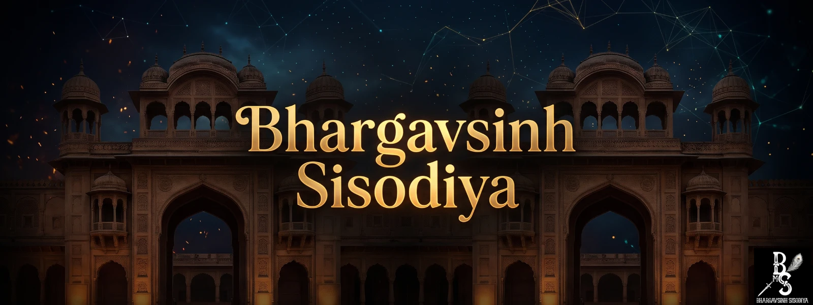

About
Personal introduction, Pushtimarg devotion, and heritage of the lineage from Shri Puranmalji.
Read more →
Visitor PortalExplore personal projects, Gujarati writing, Sisodiya genealogy, heritage resources, and public digital work by BHARGAVSINH SISODIYA.
Personal introduction, Pushtimarg devotion, and heritage of the lineage from Shri Puranmalji.
Read more →Essays, research notes, and reflective writing on heritage, philosophy, and digital work.
Browse →Digital archive of the Sisodiya lineage — genealogy of the Suryavanshi Mewar tradition.
Open →A historical reflection on the unbroken stream of Mewad history and Sisodiya legacy.
Read →Official Residence & Heritage Sanctuary rooted in Sisodiya tradition and Pushtimargiya devotion.
Explore →